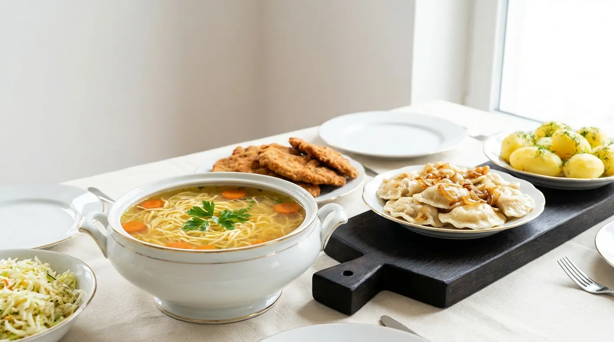
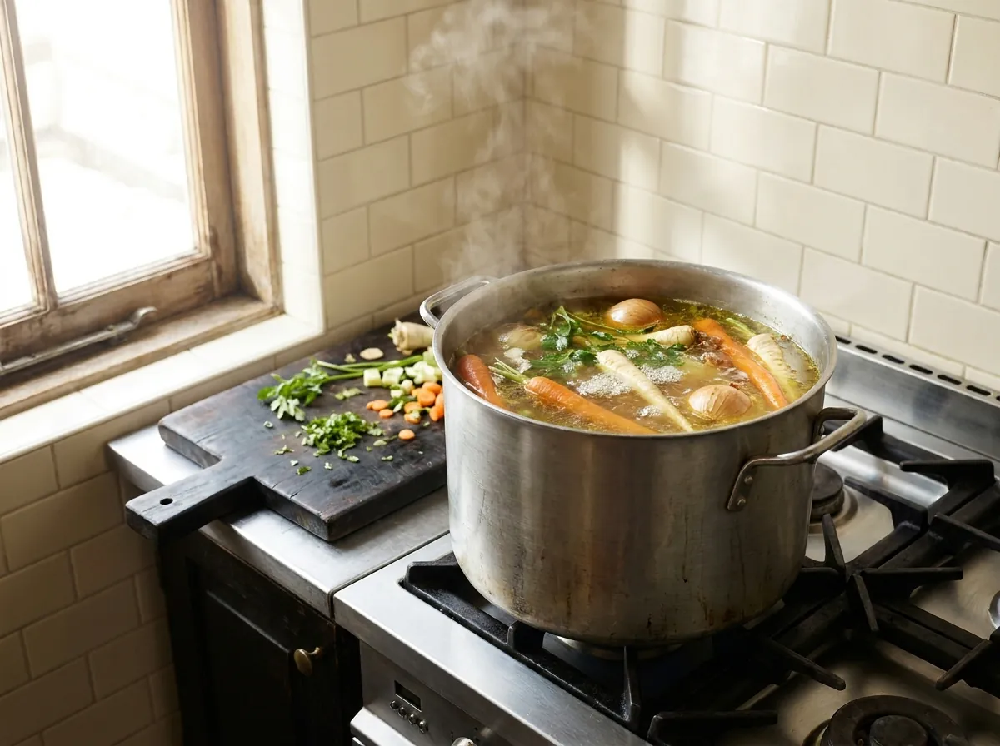
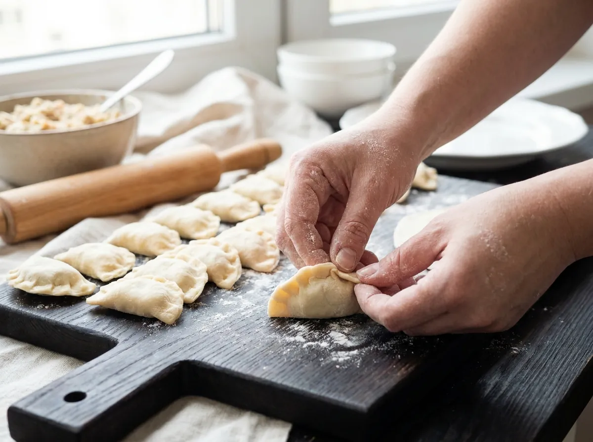
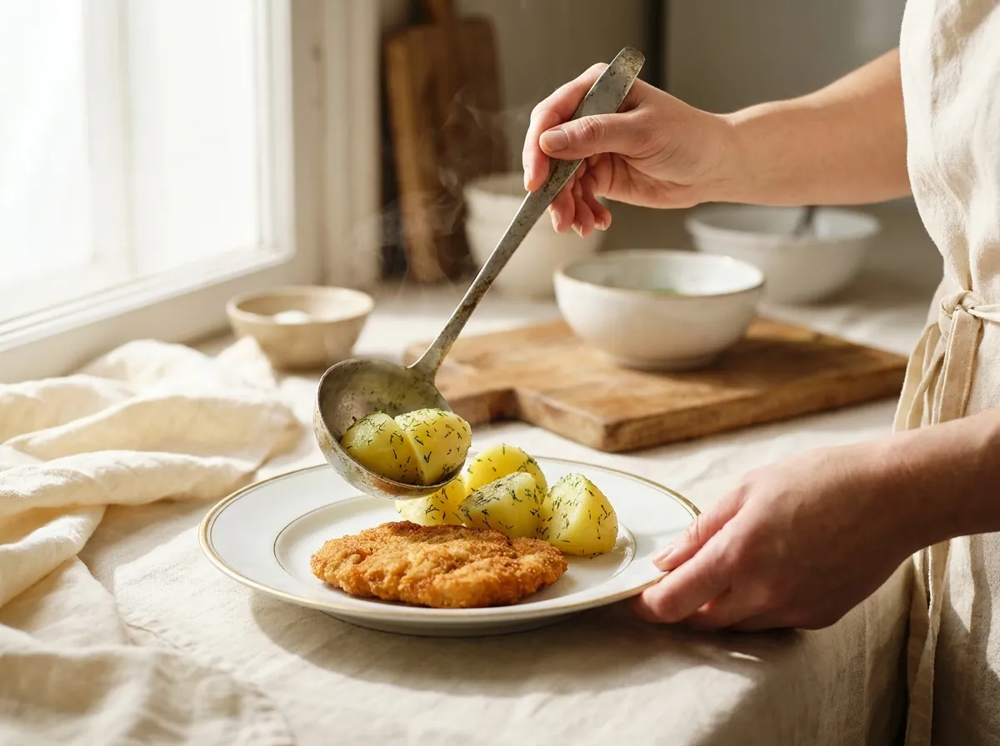
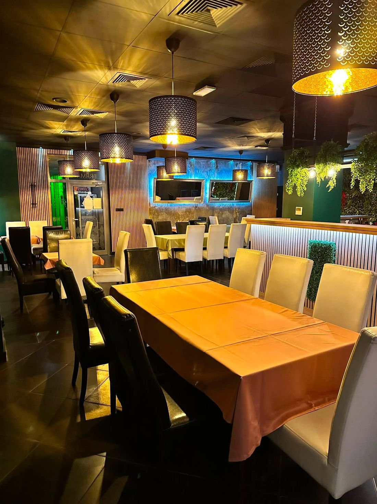

Obiad jak w domu, przy Lwowskiej 31
Rodzinna restauracja w Oleśnicy. Rosół na mięsie, schabowy z sosem grzybowym, pierogi z gęsiną i surówki robione na miejscu. Do dań mięsnych zupa gratis.
- 4,4/5779 opinii w Google
- gratiszupa do dań mięsnych
- 52pozycje w karcie
Polecamy z karty
Klasyki domu i dania, o których goście piszą w opiniach.
- Rosół z makaronem17 złgotowany na mięsie
- Kotlet schabowy46 złz sosem grzybowym, z kluskami
Prawdziwe borowiki.
Gosia K. - Pierogi z gęsiną36 złz kaszą gryczaną
Lepsze niż w opolskim Pierożku.
Mirosław N. - Schab po oleśnicku46 złz jajkiem sadzonym i cebulą
- Filet z kurczaka48 złw sosie kurkowym, z kluskami śląskimi
- Gorące maliny21 zł3 gałki lodów, maliny, bita śmietana
Do dań mięsnych zupa gratis. Zdjęcia dań mają charakter poglądowy.
„Niesamowicie dobre jedzenie! Ewidentnie szef kuchni ma smak i serce do dań, które serwuje.”
Diana Ż. · obiad
„Pierogi nawet lepsze niż w legendarnym Opolskim Pierożku.”
Mirosław N. · pierogi
„Organizowałam tam swoje przyjęcie po ślubie. Cała ekipa spisała się na medal. Cudowne miejsce, polecam!”
Kasia L. · przyjęcie po ślubie
„Schabowy petarda! Trafiliśmy przez przypadek, wróciliśmy na drugi dzień.”
Madzik K. · schabowy
„Schab z sosem grzybowym to rewelacja, prawdziwe borowiki, do tego pyszne kluski śląskie.”
Gosia K. · schab z borowikami
„Przepyszne jedzenie. Podane szybko. Zboczyliśmy z trasy w Góry Stołowe i było warto.”
Linka · obiad w trasie
Dziesięć lat przy Lwowskiej
Iwona Lenart od dziecka chciała mieć własną restaurację. Z mężem Mirosławem prowadziła wcześniej pizzerię, a w 2015 roku przejęła Bramę Oleśnicką.
Dziś prowadzą ją razem z córką i zespołem. Gotujemy to, co sami jemy w domu. Przyjeżdżają do nas rodziny na niedzielny obiad, ludzie z pracy w tygodniu i podróżni z trasy S8.
Iwona Lenart



Gotujemy też poza zwykłym obiadem
Przyjęcia w naszej sali i jedzenie z naszej kuchni na wynos. Szczegóły ustalamy przez telefon.

Święta z naszej kuchni
Uszka, pierogi, krokiety, pasztet i gołąbki na wigilijny stół. Zamówienie złożysz telefonicznie albo na Facebooku.
- Zamówienia do
- 15 grudnia
- Odbiór najpóźniej
- 22 grudnia
- Uszka z kapustą i grzybami2,50 zł / szt.
- Pierogi z kapustą i grzybami4,50 zł / szt.
- Pierogi ruskie4,00 zł / szt.
- Krokiet z pieczarkami i serem10,00 zł / szt.
- Krokiet z kapustą i grzybami12,00 zł / szt.
- Pasztet staropolski70 zł / kg
- Gołąbki60 zł / kg
Zajrzyj do środka
Sala na parterze Feniksa: dębowy bar, perforowane lampy i długie stoły na przyjęcia.

Sala wieczorem 
Stół przy barze 
Bar 
Stół na przyjęcie 
Lampy nad stołami

Zanim przyjdziesz
Nie ma tu odpowiedzi? Zadzwoń: 798 101 270.
Gdzie jest wejście do restauracji?
Lwowska 31 w Oleśnicy, parter budynku Oleśnickiego Centrum Biznesu Feniks. Wejście jest z tyłu budynku, od ulicy go nie widać. Jeśli się zgubisz, zadzwoń: 798 101 270.
Czy trzeba rezerwować stolik?
W tygodniu zwykle nie. W niedzielę po południu sala bywa pełna, więc warto zadzwonić wcześniej albo wysłać rezerwację przez formularz.
Czy zupa jest w cenie obiadu?
Tak, do dań mięsnych z karty podajemy zupę gratis. Zupę dnia można też zamówić osobno za 16 zł.
Czy można przyjść z dziećmi?
Tak. Mamy kącik zabaw i sztućce dla dzieci.
Czy w menu są oznaczone alergeny?
Tak, cyfry przy nazwach dań w karcie oznaczają alergeny. Jeśli masz alergię, powiedz o niej przy zamówieniu.
Czy mogę zamówić obiad na wynos?
Tak. Zamów przez telefon i odbierz w restauracji.
Czy można płacić kartą?
[DO UZUPEŁNIENIA]
Gdzie zaparkować?
[DO UZUPEŁNIENIA]
Lwowska 31, Oleśnica
Restauracja jest na parterze budynku Feniks, od tyłu. Od ulicy jej nie widać, więc za pierwszym razem:
- Zatrzymaj się przy Lwowskiej 31 (Oleśnickie Centrum Biznesu Feniks).
- Obejdź budynek. Wejście do Bramy jest z tyłu.
- [DO UZUPEŁNIENIA: znak wejścia i parking]